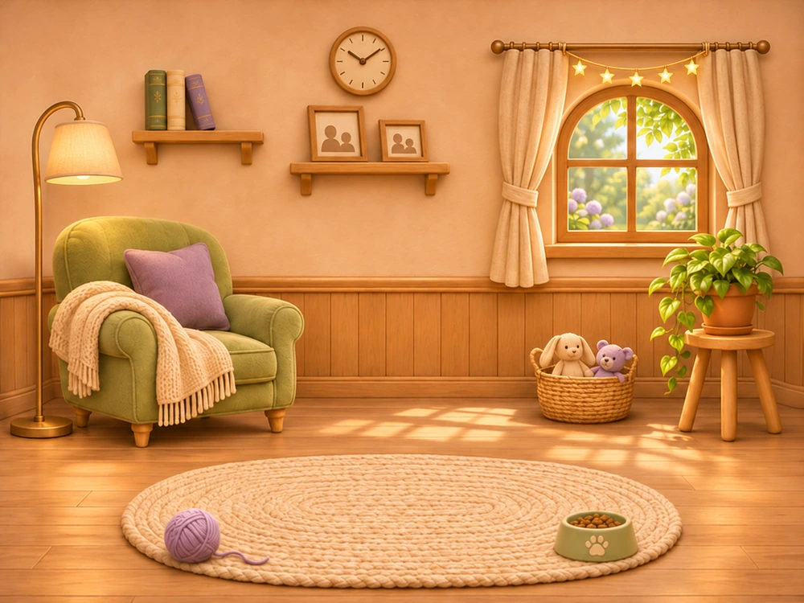
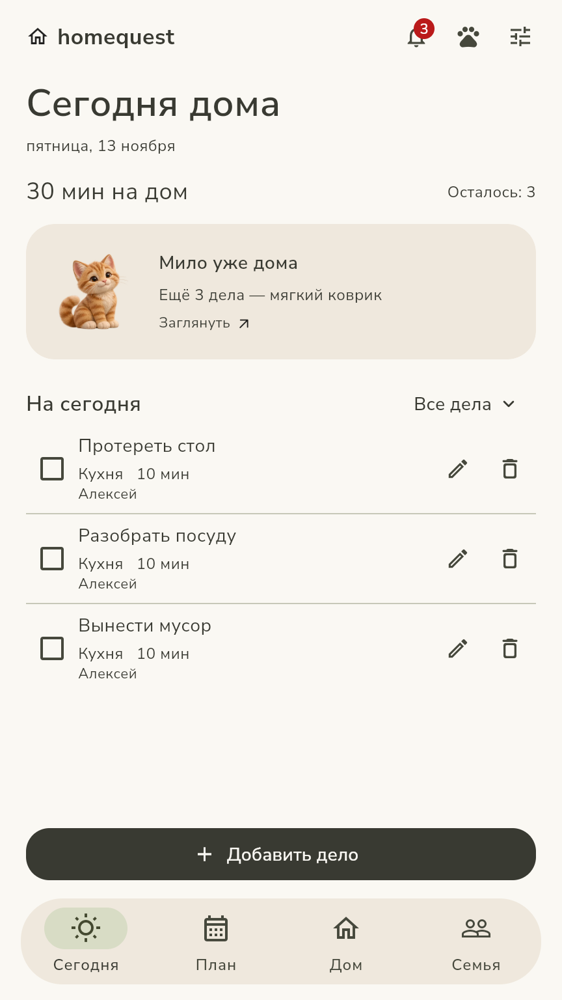

Планировщик домашних дел
Общий план.
Уютный дом.
Маленький друг.
Соберите домашние дела в одном месте. Делите заботы с близкими и открывайте новые детали комнаты вашего питомца.


Без сложного начала
Сначала — ваш настоящий дом.
- 01
Добавьте свои дела
Выберите комнаты, запишите задачи и настройте повторения. Список будет только вашим.
- 02
Договоритесь с близкими
Назначайте дела семейным профилям. Для общего дома на разных телефонах предусмотрены Google-вход и короткие приглашения.
- 03
Отметьте сделанное
За выполненные дела открываются новые детали комнаты питомца. Пропуски ничего не отнимают.
Заглянем внутрь
На сегодня.
На неделю.
На всю семью.
Комнаты, исполнители, повторения и напоминания помогают держать план под рукой. А тихие часы оставляют время для отдыха.
Экраны тестовой версии. Показаны вымышленные профили и дела.

Можно начать с себя
Личный дом — без регистрации.
Семью можно подключить позже. Детский профиль может вести взрослый со своего устройства. Основные функции, семейный обмен и питомец в первой версии доступны бесплатно.
Приложение ещё не опубликовано в RuStore. Проверяем магазинную сборку и завершаем настройку сервиса.
Задать вопрос